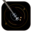

GarageBand for Windows
— Project: "My Summer Anthem.band"
File
Edit
Track
Mix
Help
🗕
🗖
✕
+
Track
🔄
Loops
🎹
Instruments
🥁
Beat Sequencer
⏮
▶
●
🔁
BAR / BEAT
001. 1. 1
TEMPO
120 BPM
KEY SIGNATURE
C Major
REVERB
DELAY
MASTER
💾 Export Song
TRACKS
GarageBand for Windows
✕